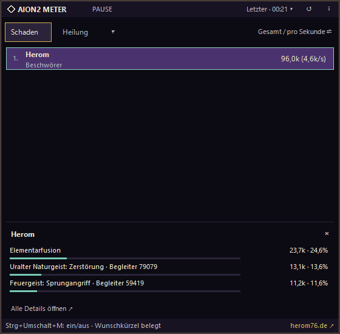
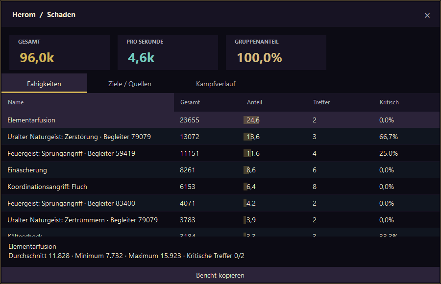

Darstellung zur Erklärung · keine Live-Spielmessung
Das Wesentliche im Blick. Die Details einen Klick entfernt.
Damage & HealSchaden, DPS, Heilung und HPS
Dein OverlayBis zu vier unabhängige Fenster
Deine DatenAufnahmen und Berichte bleiben lokal
02 Analyse
Was zählt, ist das Zusammenspiel.
Eine Zahl zeigt das Ergebnis. Fähigkeiten, Ziele und Verlauf helfen dir, den Kampf zu verstehen — für dich und deine Gruppe.
01 / DAMAGE
Schaden & DPS
Gesamtschaden und Schaden pro Sekunde. Wechsle zwischen aktuellem Kampf, einzelnen Kämpfen und der Gesamtansicht.
02 / HEALING
Heilung & HPS
Beobachtete Heilung und Heilung pro Sekunde — ergänzt durch Ansichten für erhaltenen Schaden und erhaltene Heilung.
+
03 / DETAILS
Fähigkeiten im Detail
Klicke auf einen Spieler und sieh die wichtigsten Fähigkeiten direkt im Overlay. Die ausführlichen Details zeigen Anteile, Treffer, kritische Treffer, Ziele und den persönlichen Kampfverlauf.
Frühe Beta: Gruppenzuordnung und mehrere Beschwörer brauchen noch weitere Tests. Werte können unvollständig sein.
03 Im Spiel
Weniger im Weg. Mehr im Blick.
Ein separates, randloses Overlay. Verschiebe es, passe Größe und Transparenz an und wähle die Auswertung für jedes Fenster.
Bis zu vier Fenster für unterschiedliche Werte
Speichert Position und Darstellung lokal
Klickdurchleitung auf Tastendruck
Eigene Tastenbelegung unter Einstellungen → Tastenkürzel
Demo-Modus im Menü: ohne Spiel ausprobieren
Fähigkeiten, Ziele und Verlauf per Spielerklick
Strg + Alt + MOverlay ein / aus · falls belegt: Strg + Umschalt + M
Strg + Alt + LKlickdurchleitung
Originalansicht · Herom-Theme

Ein aufgezeichneter Solo-Kampf. Begleiterschaden wird nach Zuordnung berücksichtigt.
Ein Klick tiefer Originalansicht · Spieleranalyse

Einblick in die Beta: Fähigkeiten zuerst, Ziele und Kampfverlauf über die weiteren Ansichten.
Installiere die Windows-Beta und starte Aion2Meter möglichst vor dem Spiel oder vor einem erneuten Login. Netzwerk und eigene Figur werden automatisch erkannt.
03
Overlay platzieren
Nutze den randlosen Fenstermodus in AION 2. Platziere dein Overlay und wähle Schaden oder Heilung. Über das Menü erreichst du Einstellungen und weitere Fenster.
VoraussetzungenWindows 10 22H2 oder Windows 11 · x64Npcap separat · .NET enthalten
05 Offen gesagt
Eine Beta. Mit klaren Grenzen.
Aion2Meter ist eine frühe Testversion. Die Auswertung ist noch keine vollständig geprüfte Schadensmessung. Hilf beim Testen — und behandle die Werte entsprechend.
Gruppen und mehrere Beschwörer sind noch nicht umfassend geprüft.
Overheal, Absorbs, Todesursachen und Buff-Zeiten sind noch nicht verfügbar.
Fehlende Spielmeldungen können zu unbekannten Namen oder unvollständigen Werten führen.
Der Meter liest Netzwerkverkehr passiv. Er verändert das Spiel nicht und liest keinen Spielprozessspeicher. Eine Freigabe durch den Spielanbieter wird nicht behauptet.
06 Gut zu wissen
Noch Fragen?
Ist Aion2Meter kostenlos?
Die aktuelle Beta kannst du kostenlos herunterladen und testen. Sie ist ausdrücklich eine frühe Testversion.
Ist das ein offizielles AION-2-Tool?
Nein. Aion2Meter ist ein unabhängiges Community-Projekt. Es gibt keine behauptete Freigabe oder Partnerschaft mit dem Spielanbieter.
Wie werden die Werte erfasst?
Über passives Netzwerk-Capturing mit Npcap. Der Meter greift nicht auf den Spielprozessspeicher zu, verwendet keine Code-Injection und sendet keine Spielpakete. Der Decoder ist experimentell; nicht erkannte Meldungen können in den Werten fehlen.
Werden meine Kampfaufnahmen hochgeladen?
Nein, es gibt keinen automatischen Upload. Aufnahmen, Berichte und Fehlerprotokolle bleiben lokal. Rohaufnahmen können Spielernamen, Netzwerkadressen und weitere Verbindungsdaten enthalten. Teile sie nur gezielt und privat, wenn du das möchtest.
Wie bekomme ich Updates?
Der Meter prüft beim Start auf neue Versionen. Unter „Hilfe“ findest du „Nach Updates suchen“. Installiert wird nach deiner Bestätigung. Der Download wird geprüft; Einstellungen und Aufnahmen bleiben erhalten.
Was tun, wenn Windows vor dem Installer warnt?
Die Beta-Installationsdatei ist nicht digital signiert; Windows kann einen unbekannten Herausgeber melden. Nutze den hier verlinkten GitHub-Release und prüfe die Datei. Schalte Schutzfunktionen nicht pauschal ab. Die Anleitung enthält die Beta-Hinweise.
Warum bleibt mein Meter leer?
Prüfe Npcap und die aktive Netzwerkverbindung. Starte den Meter vor dem Spiel oder logge dich anschließend neu ein, damit Charakter- und Gruppenmeldungen erfasst werden. Diagnose und Replay findest du unter „Hilfe → Diagnose / Replay“.
Weiterentwicklung
Release Notes. Was sich geändert hat.
Die neuesten Änderungen zuerst. Alle hier aufgeführten Betas wurden am 7. Oktober 2026 veröffentlicht.
Beta 0.2.1 · Zuordnung und Kampfauswertung
Erkannte Spieler werden nicht mehr durch Begleiter-Fähigkeiten als Begleiter eingestuft. Nachträglich erkannte Namen korrigieren die Anzeige.
Nachlaufende Heilungen verlängern die DPS-Zeit nicht mehr. Kampfende bleibt vorsichtig zeitbasiert; ein echter Kampfstatus ist noch nicht bestätigt.
Neue Analyseansichten: Kampf-Timeline, lokales Replay und Training vergleichen. Death Recap ist ausdrücklich experimentell.
119 automatische Prüfungen bestanden. Anleitung mit Screenshots aktualisiert; Windows-Code-Signierung weiterhin offen.
Aufzeichnungen werden nach 15 Minuten oder 256 MiB in weitere Dateien aufgeteilt.
Bei 1 GiB pro Sitzung oder Schreibfehlern endet nur die Speicherung. Die Live-Messung läuft weiter.
80 automatische Prüfungen bestanden; Anleitung aktualisiert. Aufzeichnungen bleiben über mehrere Sitzungen erhalten. Windows-Code-Signierung noch offen.
Beta 0.1.14 · Replay-Prüfungen und nachvollziehbare Zuordnung
Doppelte wartende TCP-Pakete lösen keine falschen Pufferverluste mehr aus.
Zuordnung erklären unter Hilfe → Diagnose / Replay: eigene Figur, Gruppe und Begleiter samt Besitzerhinweis; Bericht bleibt lokal.
75 automatisierte Prüfungen und Wiederholungstests mit vorhandenen Kampfaufnahmen. Echte Gruppen und alle Klassen müssen weiterhin im Spiel geprüft werden.
Prioritäten der Beta, ohne feste Veröffentlichungstermine. „Im Test“ bedeutet: vorhanden, aber noch nicht vollständig bestätigt. Stand: 7. Oktober 2026.
Im Test
Gruppen und Begleiter
Spieler eindeutig zuordnen, fremde Spieler ausschließen und Begleiterschaden beim richtigen Besitzer zählen – besonders bei mehreren Beschwörern.
Im Test
Schaden und Heilung aller Klassen
Die vorhandene Erkennung mit Kämpfen aller Klassen prüfen. Vollständige Abdeckung aller Fähigkeiten ist noch nicht bestätigt.
Im Test
Bedienung und Stabilität
Das neue Menü, eigene Tastenkürzel, Demo-Modus, Updates und Fenster mit Rückmeldungen aus dem Betatest prüfen.
Geplant
Weitere Kampfauswertungen
Todesursachen, Overheal, absorbierter Schaden und Buff-Zeiten – sobald die nötigen Spielmeldungen zuverlässig verstanden sind.
Geplant
Bosskämpfe und Phasen
Boss-, Phasen- und Wipe-Erkennung untersuchen, damit Kämpfe besser abgegrenzt und verglichen werden können.
Geplant
Profile und mehr Komfort
Benannte Fenster- und Darstellungsprofile sowie weitere Verbesserungen anhand eurer Rückmeldungen.
Aion2Meter Beta 0.2.1
Dein nächster Kampf. Ein bisschen klarer.
Teste das Overlay und entdecke die Details hinter deinen Zahlen.